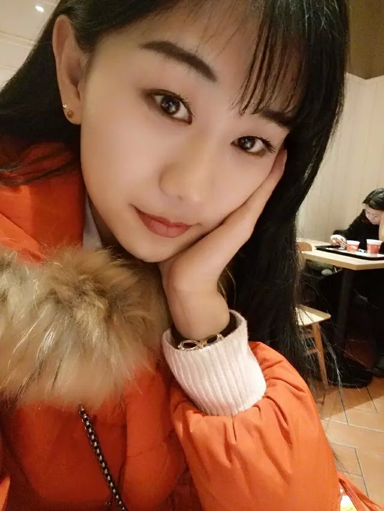

熟练掌握c#，.net,css（css3），html（html5），javascript，数据库等
掌握c、c++，java，操作系统等
姓名：孙靖宇
年龄：21
性别：女
出生年月：1995-09-20
电话：15940277230
邮箱：838076607@qq.com
籍贯：黑龙江省黑河市
毕业学校：沈阳师范大学
专业：软件工程
求职意向：net程序员，前端开发人员等一系列我能胜任的工作
期望的求职地点：上海，杭州，北京
 时间：2013.09-至今
学校:沈阳师范大学
专业：软件工程
学历：本科
时间：2013.09-至今
学校:沈阳师范大学
专业：软件工程
学历：本科
工作经验
本人为沈阳师范大学，软件工程专业大三的学生，在校期间，大一参加学院工作室，跟着老师一起学习做项目，比赛，无工作经验
项目经验
用.net写过一个关于运动健身的网站（用于参加比赛），叫power dream（有力量的梦想），针对于学校大学生人群健身，这个网站是一个大学生的健身平台，只针对一个学校，用户可以根据提交自己的每学期体能测试，身体状况等一系列数据，学校老师，学生等有专业体育能力的人开出一份属于这位用户的“特定”健身方案。
这个网站让我最深刻的事情就是整个网站的编写都是我一人完成，从不会，学习，到它真的存在，我很开心，通过它我学了很多，变得喜欢敲代码。谢谢阅读 点击这里进入
获奖经历
沈阳师范大学软件学院学习三等奖学金 2014年9月
沈阳师范大学软件学院学习二等奖学金 2015年9月
沈阳师范大学软件学院思想道德奖学金 2015年9月
沈阳师范大学软件学院文体活动奖学金 2015年9月
第八届大学生计算机设计大赛国赛三等奖 2015年9月
校内经历
我在大一时加入沈阳师范大学软件学院学生会公关部,担任公关部干事一职。
我们部申请过学院主持人大赛，并成功举办，组织期间我们部干事积极协助部长跟学校沟通，拉赞助，跟同学们宣传，鼓励大家踊跃报名，最后也赢得了不错的好评，院领导及同学都很满意，我们也很开心